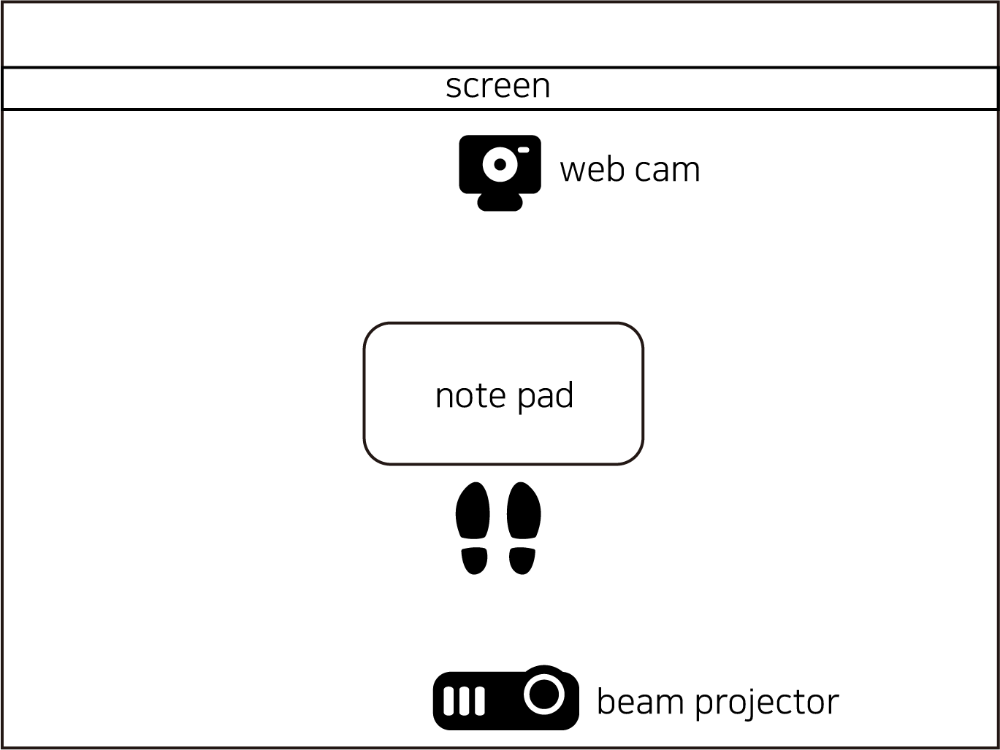
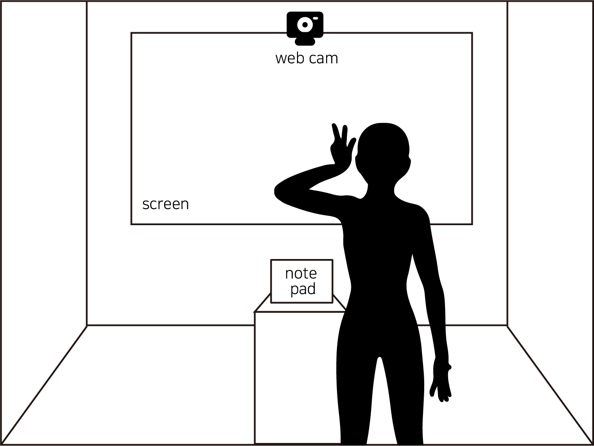
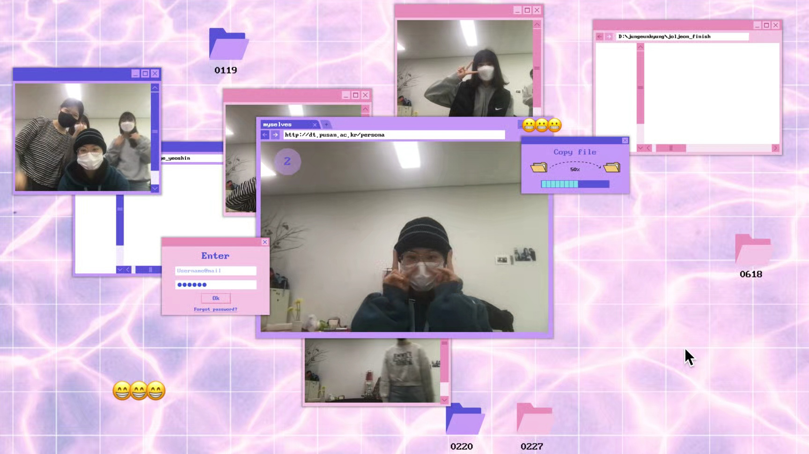
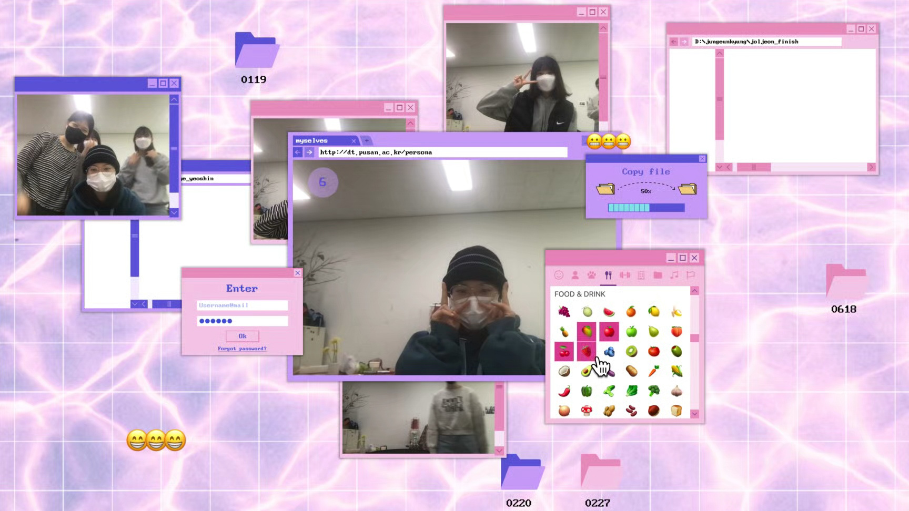
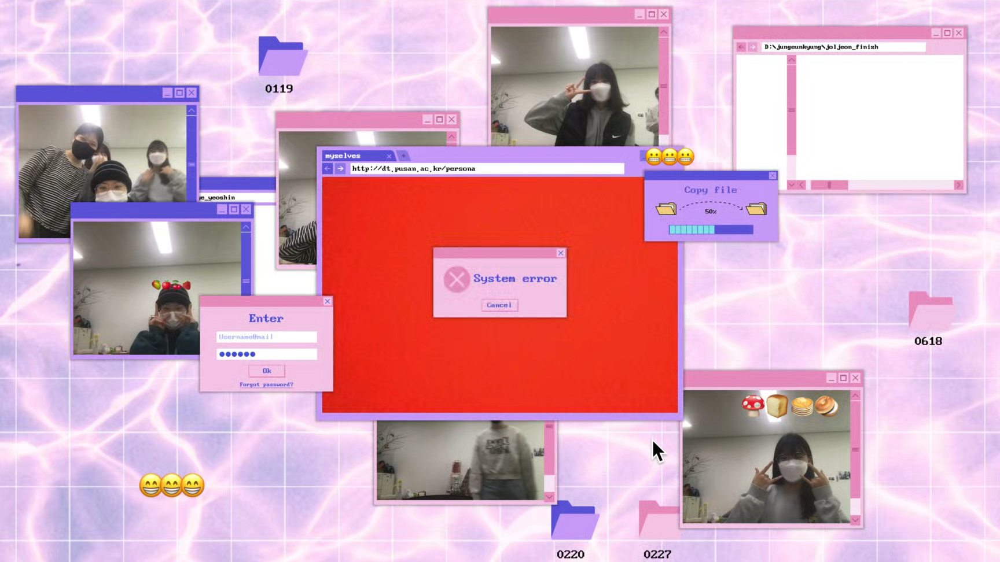

페르소나는 주위 사람들의 기대와 요구에 맞게 나 자신을 다양하게 표현할 수 있는 수단이다. 멀티 페르소나 시대를 살아가는 우리는 상황에 맞는 나를 보여주기 위해 오늘도 가면을 쓴다. 개인의 다양한 페르소나와 그로 인해 다양해지는 우리 사회를 표현하고자 한다.
PERSONA NO.1736
우리는 살면서 수많은 상황과 마주치고 그에 맞는 다양한 페르소나를 활용한다. 본 영상은 페르소나가 제작되는 과정을 쿠키를 만드는 것에 비유했다. 재료의 비율과 아이싱 색을 달리하여 다양한 쿠키를 만들 수 있는 것처럼, 페르소나를 만드는 것 또한 여러 가지 요소가 섞여서 다양한 '나'를 만들 수 있다. 어려운 상황에 처한 '나'에게 산타가 페르소나 쿠키를 만들어 완성된 쿠키를 나에게 선물해주고, 받은 쿠키를 먹으면 상황에 맞는 나의 페르소나를 만들 수 있다. 당신은 오늘 몇 개의 쿠키를 먹었는가.
Me and Myselves
우리가 예전에 자주 가던 스티커 사진 가게나 요즘의 셀프 스튜디오 가게의 벽면에 붙은 사진들을 가만히 들여다보면 수없이 다양한 사람들의 존재를 확인할 수 있다. 이에 착안하여 우리만의 방식으로 개인의 다양한 페르소나를 표현하고자 했다. 전시를 관람하는 관객들이 카메라 앞에서면 자동으로 촬영이 시작되고, 한 가지 역할이나 직업이 아닌 개인을 나타내는 다양한 정체성과 맞는 이모지를 선택하여 함께 기록할 수 있다. 그렇게 저장된 사진들을 화면 상에 하나,둘 쌓음으로써 다양한 페르소나가 모여 다양해지는 사회를 확인할 수 있다.



1. 사람이 인식되면 촬영이 시작된다.

2. 촬영이 끝나면 이모티콘을 최대 4개 선택한다. 선택한 이모티콘으로 사진을 꾸밀 수 있다.

3. 사진을 찍는 도중 사람이 사라지면 에러창이 나타난다.
PERSONA NO.1736
VARYTEAM
탁향정 박지혜 오재연 이지현 정은경
우리는 살면서 수많은 상황과 마주치고 그에 맞는 다양한 페르소나를 활용한다. 본 영상은 페르소나가 제작되는 과정을 쿠키를 만드는 것에 비유했다. 재료의 비율과 아이싱 색을 달리하여 다양한 쿠키를 만들 수 있는 것처럼, 페르소나를 만드는 것 또한 여러 가지 요소가 섞여서 다양한 '나'를 만들 수 있다. 어려운 상황에 처한 '나'에게 산타가 페르소나 쿠키를 만들어 완성된 쿠키를 나에게 선물해주고, 받은 쿠키를 먹으면 상황에 맞는 나의 페르소나를 만들 수 있다. 당신은 오늘 몇 개의 쿠키를 먹었는가.
우리가 예전에 자주 가던 스티커 사진 가게나 요즘의 셀프 스튜디오 가게의 벽면에 붙은 사진들을 가만히 들여다보면 수없이 다양한 사람들의 존재를 확인할 수 있다. 이에 착안하여 우리만의 방식으로 개인의 다양한 페르소나를 표현하고자 했다. 전시를 관람하는 관객들이 카메라 앞에서면 자동으로 촬영이 시작되고, 한 가지 역할이나 직업이 아닌 개인을 나타내는 다양한 정체성과 맞는 이모지를 선택하여 함께 기록할 수 있다. 그렇게 저장된 사진들을 화면 상에 하나,둘 쌓음으로써 다양한 페르소나가 모여 다양해지는 사회를 확인할 수 있다.
1. 사람이 인식되면 촬영이 시작된다.
2. 촬영이 끝나면 이모티콘을 최대 4개 선택한다. 선택한 이모티콘으로 사진을 꾸밀 수 있다.